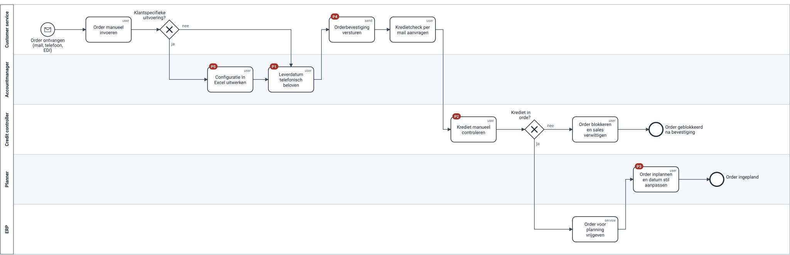

8 van 41 processen zonder eigenaar
Het hele E2E-proces issue-to-resolution heeft er ook geen.
Independent portfolio case · fictional organisation · Philippe Godfroy
Van een procesboom in PowerPoint naar een beheerde procescatalogus met eigenaars, één modelleerstandaard die automatisch getoetst wordt, en een eerste referentiemodel voor order-to-cash.
Corvent Industries, een fictieve maakindustrie van ±950 medewerkers, liet een procesarchitectuur tekenen op capabilities en end-to-end processen. Een jaar later gebruikt niemand die, en over zes weken vraagt het ERP-project welke versie van een proces de juiste is.
Het hele E2E-proces issue-to-resolution heeft er ook geen.
Reviews gaan over smaak; modellen zijn niet te vergelijken.
Visio, PowerPoint en Word; het ERP-team krijgt tegenstrijdige versies.
Sales belooft, planning wijzigt; OTIF 78% (illustratief).
Capability map naast de bestaande procesboom; catalogus met verplichte velden, uit één bron gegenereerd.
Conventie van drie pagina's, checklist van 18 regels, waarvan 13 automatisch in CI.
Order-to-cash van L1 tot L3, as-is met pijnpunten, to-be met uitzonderingen.
Review van een analistenmodel: vijf punten, elk als vraag; de herwerkte versie haalt alle checks.
Rollen, RACI, procesraad en een wijzigingsflow die zelf een getoetst proces is.
Vijf initiatieven, gekoppeld aan proces-ID, KPI en eigenaar.
De bestaande procesboom blijft de basis. Daarnaast komt een capability map: wat Corvent moet kunnen, los van wie het doet. Elk L2-proces wijst naar een capability en naar de systemen die het ondersteunen.


Geen inclusive gateways: die leest bijna iedereen anders. Eén naamregel: object + werkwoord, zoals in de catalogus.
R01–R13 automatisch, M01–M05 voor de reviewer: voor wie is het model, waar zijn de overdrachten?
Elke push toetst alle modellen en de catalogus. Werkversies (*.draft.bpmn) mogen nog falen.
As-is met vijf genummerde pijnpunten (rood); de to-be toont welke taak welk pijnpunt oplost (groen). De leverdatum verhuist naar OTC-03, met één eigenaar.

Losse draad, inclusive gateway, een persoon als lane, geen attributen: 9 bevindingen op 7 regels.
"Wat gebeurt er als de datum niet haalbaar is? Welke rol beslist?" De vorm lost de analist zelf op.
Het eigenaarsconflict gaat naar de procesraad: dat kan geen model oplossen.
| Activiteit | Procesraad | L1-eigenaar | L2-eigenaar | Analist | Architect |
|---|---|---|---|---|---|
| Wijziging binnen één L2 vrijgeven | — | I | A | R | C |
| Wijziging op L1 of aan een overdracht | A | R | C | C | R |
| Model reviewen tegen de conventie | — | — | I | C | A/R |
| Catalogus en conventie beheren | I | I | I | C | A/R |

L2 met eigenaar
33 → 41
start → 12 maanden
L2 vrijgegeven
8 → 30
start → 12 maanden
Orders bevestigd binnen 4 werkuren
42% → 85%
initiatief I-02
Manuele kredietcheck
31% → ≤10%
initiatief I-01
Illustrative assumptions — not real company data.
| Vereiste | Bewijs |
|---|---|
| Procescatalogus beheren | catalogus uit één JSON-bron, dekking per L1, werklijst van governance-gaten |
| Procesarchitectuur op capabilities en E2E | capability map met heatmap, procesboom L0–L4, overdrachten |
| Standaarden voor modellering en documentatie | conventie, documentatiesjabloon, ADR over het palet |
| Kwaliteit en consistentie bewaken | 18 regels, 13 als code, 17 tests, in CI |
| As-is en to-be modelleren in BPMN | order-to-cash L1 → L3, geldige BPMN 2.0 |
| Analisten coachen | review met vijf punten, onboarding-kit, review-ritme |
| Procesgovernance | RACI, statussen, procesraad met beslissingslog |
Volledige mapping, inclusief wat niet geclaimd wordt · Vacature-lenzen: process architect · process analyst
Paden van 2, 5 en 15 minuten.
41 L2-processen met eigenaar, status en capability.
Agenda's, beslissingslog, voorstel over de leverdatum.